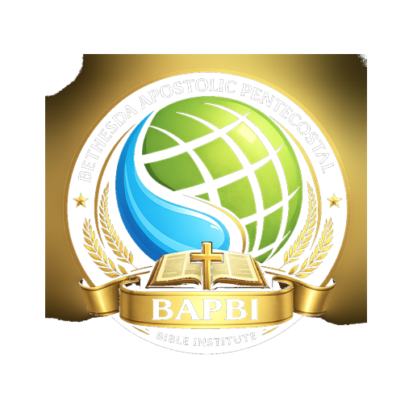

Affiliations
Websites and organizations connected to work, worship, and service
Each link below represents a place where service, teaching, worship, and calling continue to grow in the Name of Jesus.
Brad Hobbs Web Design
Web design work shaped by Information Technology and Business Management training.
VisitBethesda Tabernacle
An Apostolic church centered on Jesus and the authority of His Name above every name.
VisitBrad Hobbs
A personal testimony space sharing the goodness of Jesus through life and ministry.
VisitCommunity Action Council
Serving as a teacher at the Prep Academy at Russell Schools Center.
Visit

Bethesda Apostolic Pentecostal Bible Institute
Apostolic foundations taught in alignment with Acts 2:38 and the words of Jesus.
Visit“Whatever you do, do your work heartily, as for the Lord.”
Colossians 3:23